Automatic Transmission/Transaxle
Park:
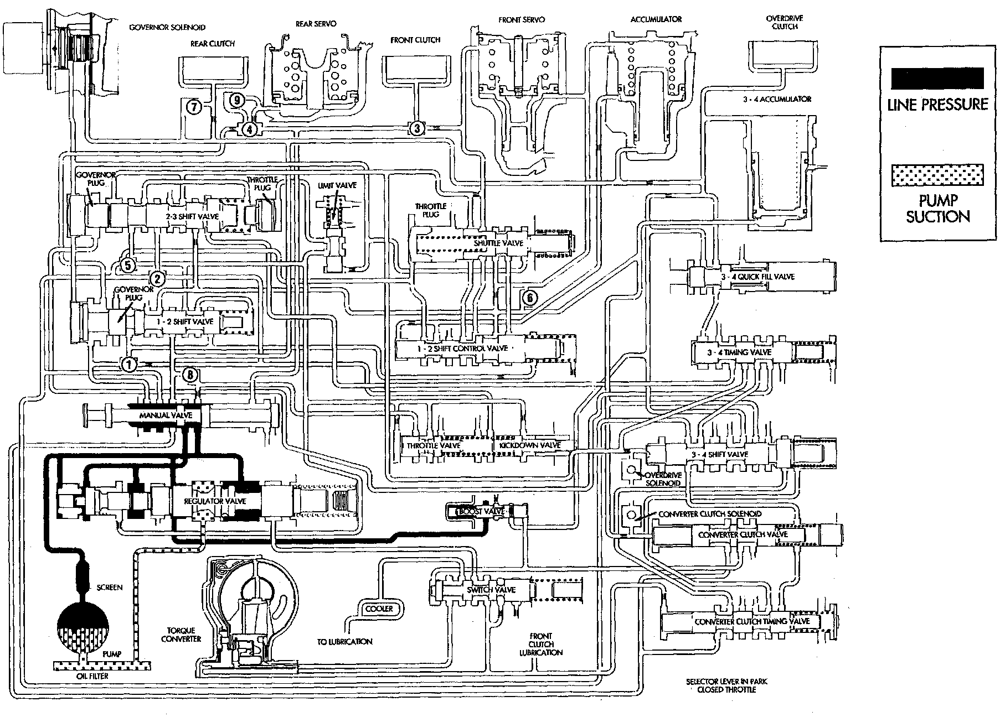
Neutral:
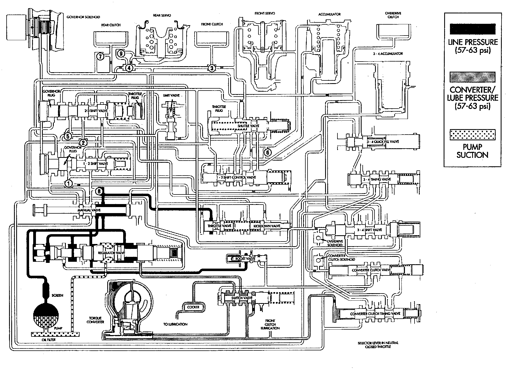
Reverse:
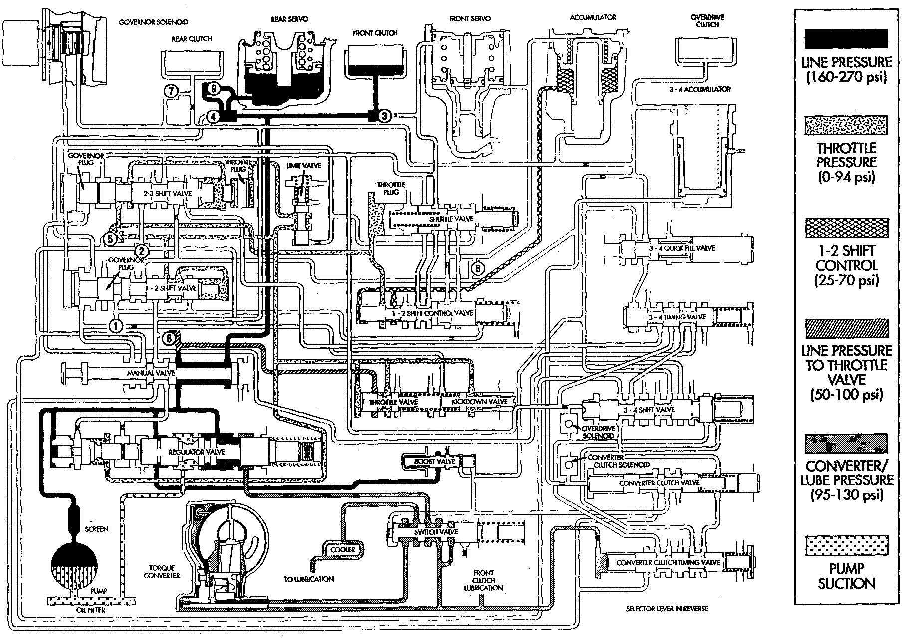
Drive First Gear:
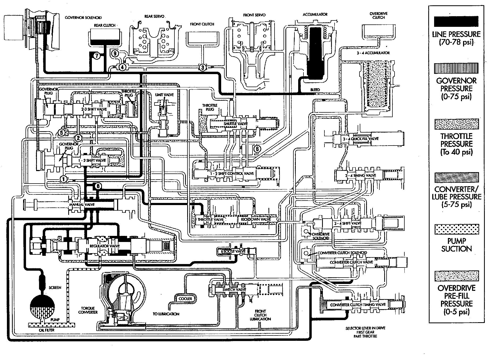
Drive Second Gear:
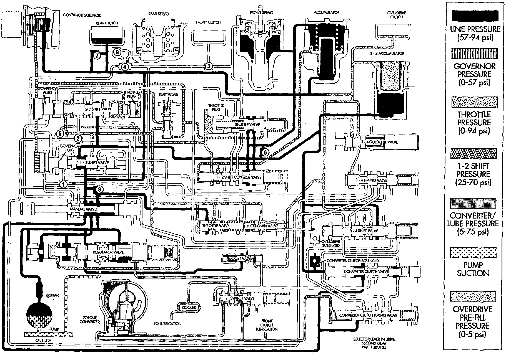
Drive Third Gear:
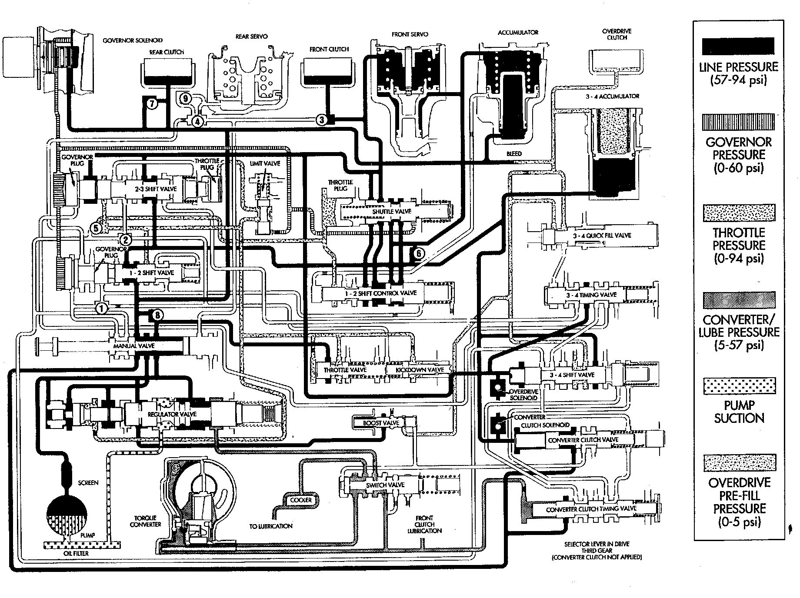
Drive Fourth Gear (Converter Clutch Not Applied):
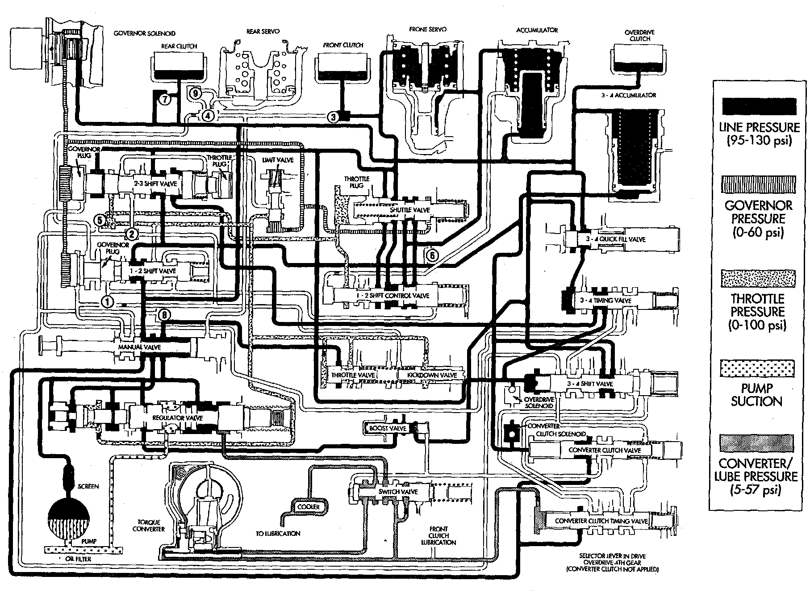
Drive Fourth Gear (Converter Clutch Applied):
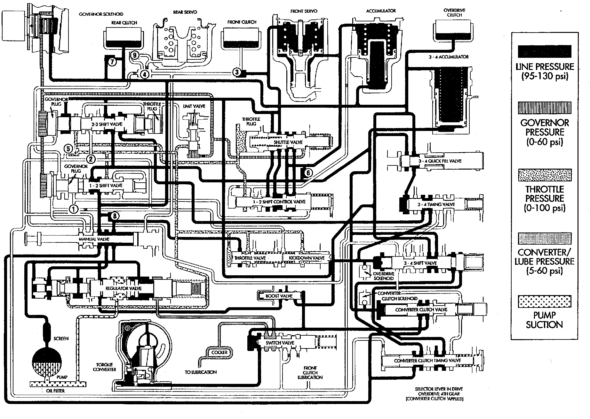
Manual Low (1):
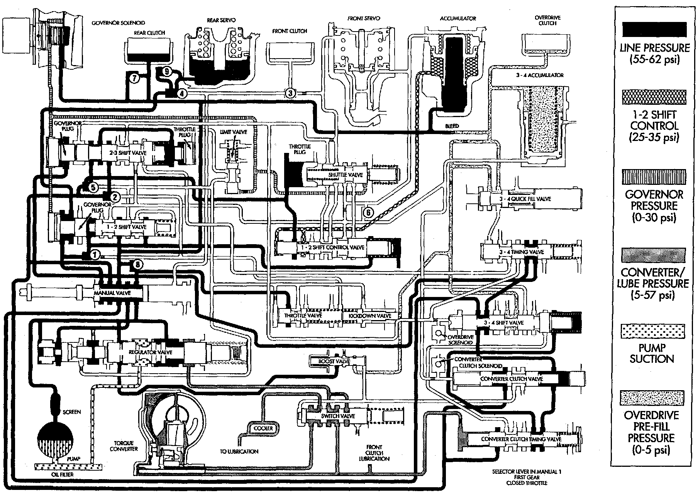
Manual Second (2):
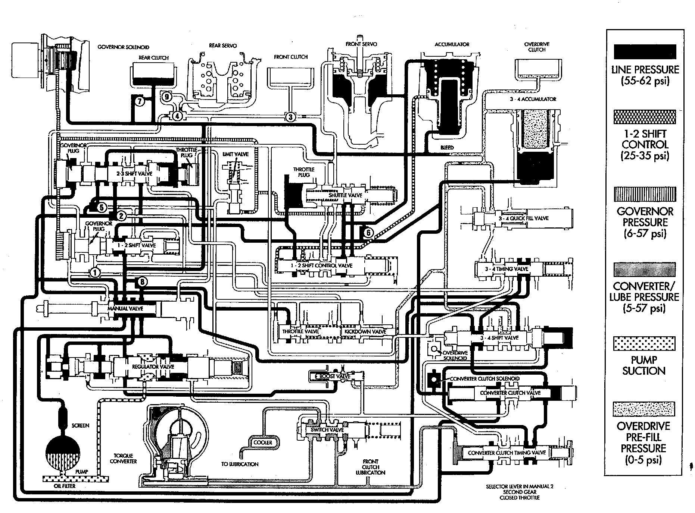
During Full Throttle 3-2 Downshift (Passing Gear):
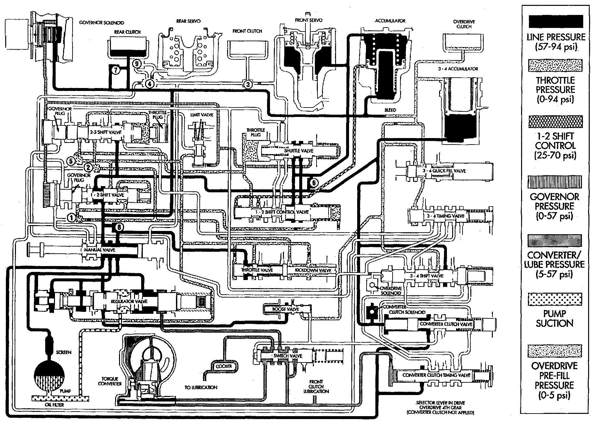